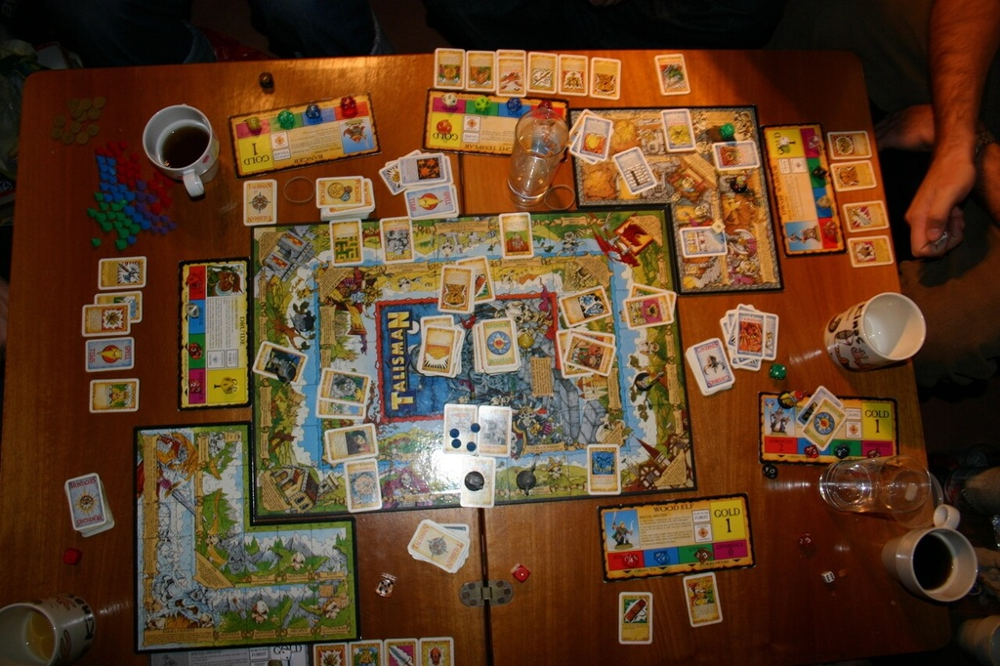

I love board games. I have been playing board games since as far back as I can remember. After getting married my wife and I decided that we needed to start our own collection of games since we enjoyed playing together so much and what started out as getting a game here or there has grown to over 150 games in our collection. We do not plan on stopping any time soon. I have also loved being able to recommend games to everyone that will take the time to listen to me. Playing games is a lot of fun but there is a great satisfaction when you hear that other people liked your game recommendation so much they purchased the game themselves. Both of these loves is what sprouted the idea of extending my reach out to all of you. I sincerely hope you can find a recommendation that you will enjoy for many years to come!
My Favorite Game
I enjoy games of all kinds, but my favorite game is Talisman. This game is not for everyone though since it can take 2-10 hours to complete a game, but I have always really enjoyed it. Fair warning to anyone that wants to try it though, it is a little hard to find a group and time to play such a long game. I have all fourteen expansions that go with the game but you do not need all the expansions to have a great time.